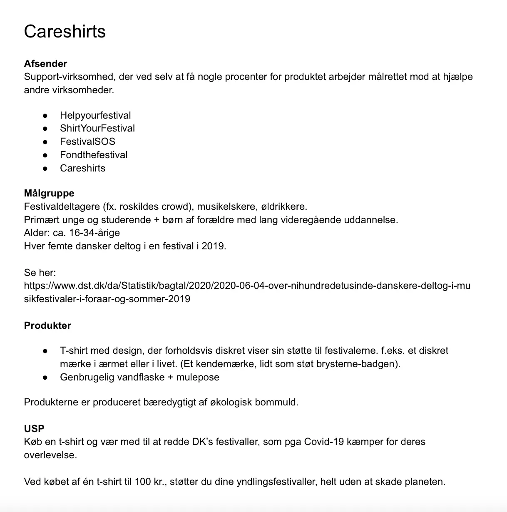
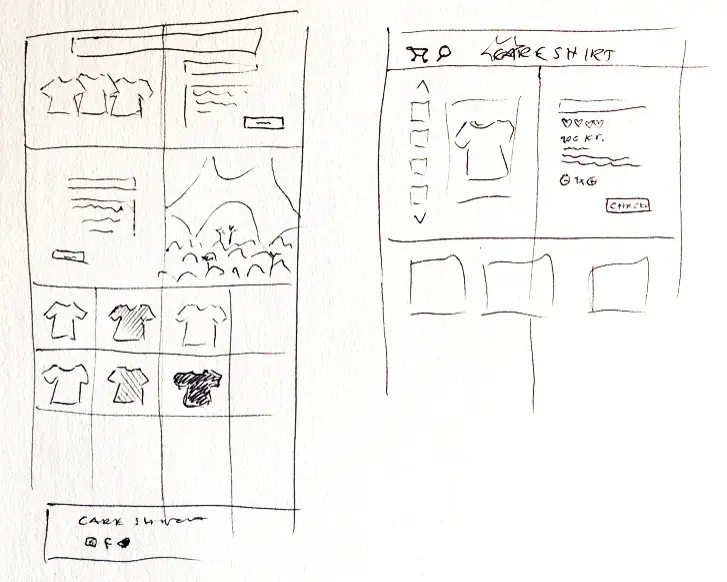
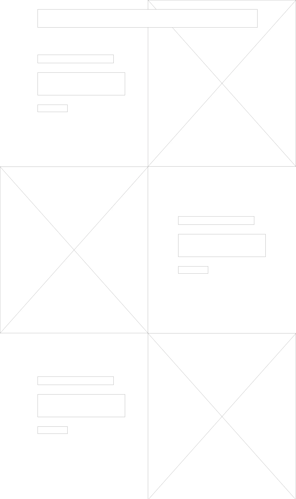
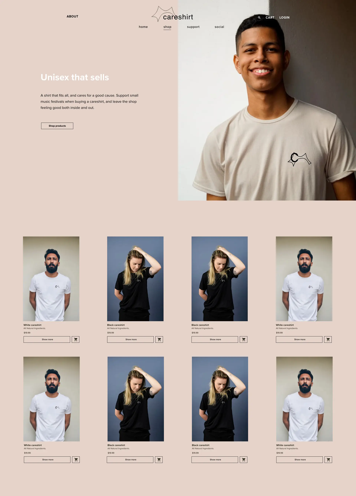
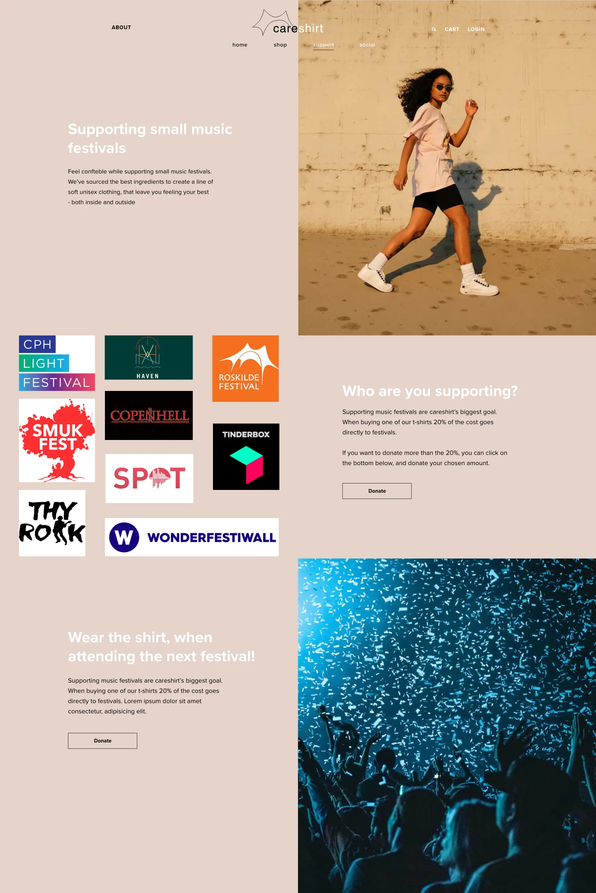
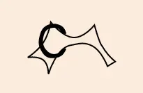
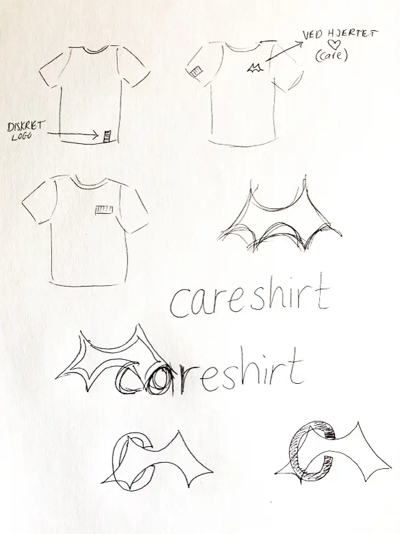
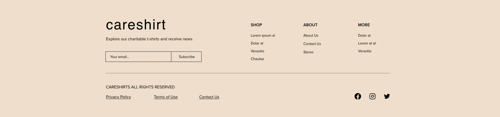

Da vi i marts påbegyndte UX-forløbet, nåede jeg kun at være delvist med i første uge, pga min fars sygdomsforløb, som gjorde mig ude af stand til at holde fokus på skolen. Derfor har jeg ikke leveret det samme som mine medstuderende, men i stedet udviklet en prototype på baggrund af min konceptbeskrivelse, som jeg nåede at aflevere. En stor del af de forskellige metoder og læringsmål der hører UX til, har jeg lært og gjort brug af på tema 5, og de resterende metoder vil jeg til den mundtlige eksamen vise, at jeg også forstår at bruge på andet stof end det givne. Her et udklip af konceptbeskrivelsen fra 8. marts:
Ud fra konceptbeskrivelsen om et tøjbrand, der sælger t-shirt med formålet om at donere 20% af afkastet til små festivaller, startede jeg processen med at skitsere. Jeg tegnede en wireframeskitse med fokus på symetri og balance på websitet:
Skitsen blev til en wireframe, hvor jeg forsøgte at lege med balancen mellem asymetri og symetri. Grundskelettet kom til at se således ud.

Efter et enkelt kvalitativt interview om købsflow med én person
inden for målgruppen (16-34-årige), udarbejdede jeg en prototype,
hvor måden min interviewperson handlede på nettet på, havde stor
indflydelse. Cecilie, som selv er en hyppig festivalgænger, gik op
i, at t-shirten ikke måtte være for dyr, at den skulle være af en
holdbart og konfortabelt materiale. At det skulle være et diskret
logo, så man fx. ikke rendte rundt med en kæmpe orange scene på
ryggen, men at man også kunne bruge t-shirten i hverdagssituationer,
uden det skabte stort postyr. Desuden vægtede hun minimalisme og nem
navigation høtj, da hun blandt andet sagde ja, til at hun ville
droppe købet, hvis der var for mange steps til selve checkout. Alt
dette og mere til, har jeg brugt i udviklingsprocessen af mit site.
Med tanke på både koncept, USP, copywriting og microcopy, samt data
om online inkøbsvaner fra udvalgt interviewperson, kom jeg frem til
følgende resultat:
Shoppen, som har vægt på at t-shirten passer alle, samt viser forskellige varianter:
 Her i shoppen på vej til indkøbskurven har jeg lagt vægt på enkelthed og gjort brug af diverse
virkemidler. Bl.a. ved at indbringe social proof i form af
anmeldelser, som er med til at skabe troværdighed omkring produktet.
Derudover har jeg forsøgt med en simpel call-to-action ved knappen
"Add to cart" samt et symbol, som er genkendeligt for mange.
Muligheden for at tilføje flere t-shirt til sin kurv er også gjort
nemt, ved et enkelt klik på plus-tegnet.

I prototypen har jeg valgt at lægge fokus på enkelthed,
UI-elementer, få, diskrete farver, symetri overfor aysymetri for at
skabe balance mm, og er derfor endt med prototypen på et website,
der har en festival-vibe, kombineret med et nedtonet farvevalg i
designet.
Jeg har forsøgt at holde mig til få monocrome farver, der
kontrasterer ift varme/kulde.
Desuden en blød og afrundet font til header og footer (Somatic-Rounded), samt en læsbar og simpel font til indholdet som jeg har hierakiseret ved at tillægge forskellig størrelse og font-vægt (PT sans). Begge uden seriffer.
Det er vigtigt brugeren forstår, at de støtter festivaller, når de køber en t-shirt, udover at være et unisex-brand. Derfor har jeg lavet en support-side, hvor man kan se hvad og hvem man støtter, hvor man også har mulighed for at donere ekstra ved et simpelt klik, som jeg forestiller mig, skal navigere hen til en simpel side, hvor det muliggøres.
Desuden har jeg tegnet et lille logo i vector, som gerne skulle føre associationer hen på festival, da det er orange scenes telt, som mange danskere kender og forbinder med en festivaloplevelse.
Processen startede med skitser af logo og skitser hvor jeg legede med placeringen på t-shirten:
I footeren kan man orientere sig i careshirt's information samt melde sig til et nyhedsbrev og derudover følge med på diverse sociale medier.
De keywords som er sigende for sitet, og som jeg har med i både min copywright og microcopy er primært: Support, donate, festival, music, unisex, careshirt, joy, social, t-shirt, confetable mm.